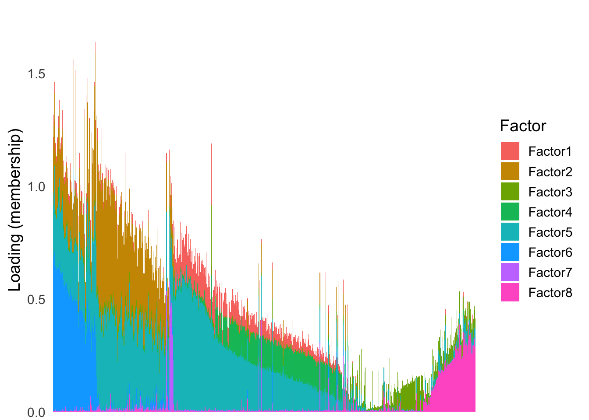
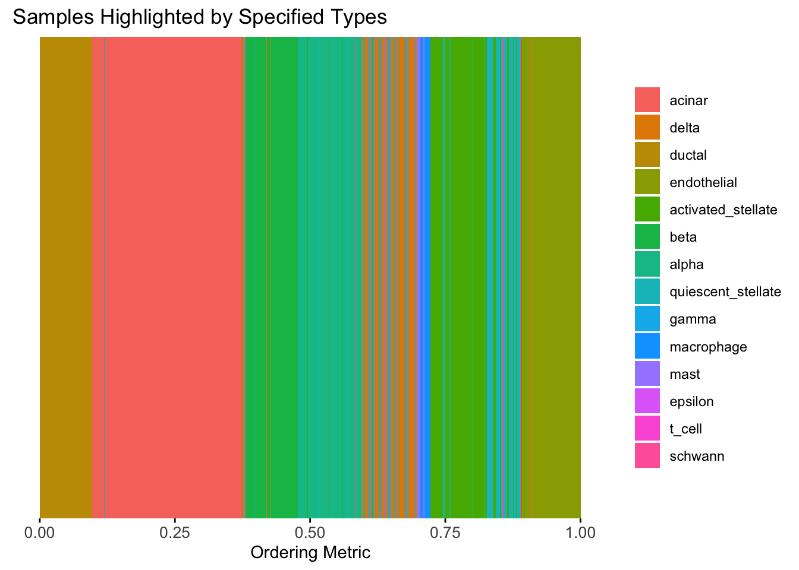
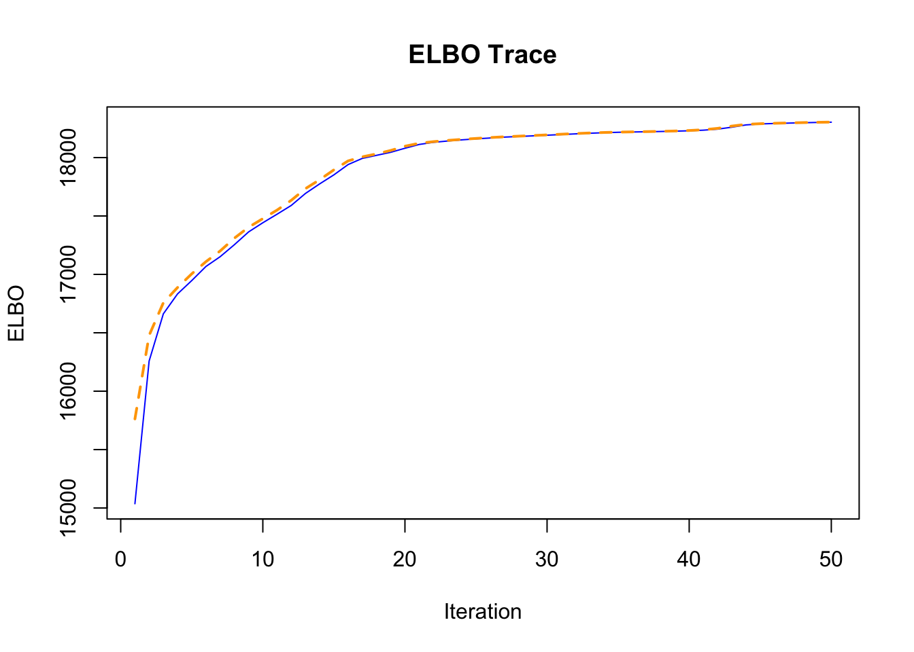
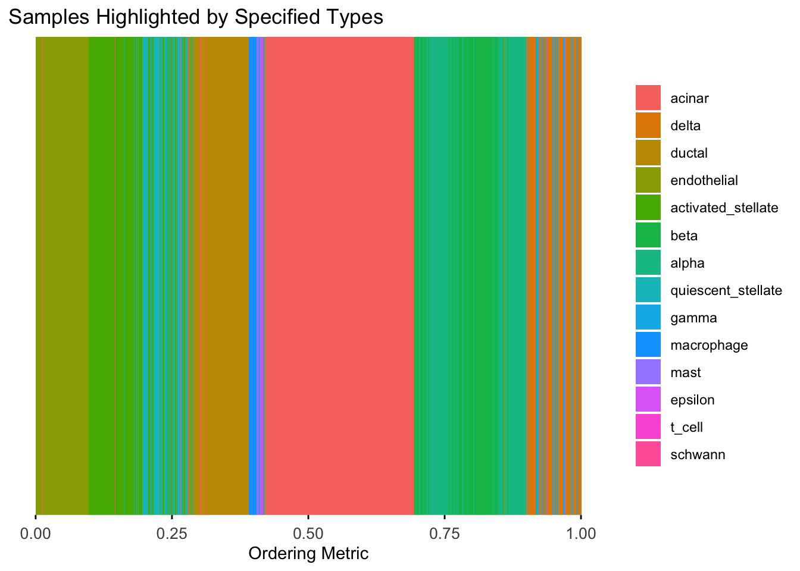

Infering latent ordering from the pancrea dataset
Ziang Zhang
2025-06-23
Last updated: 2025-12-15
Checks: 7 0
Knit directory: InferOrder/
This reproducible R Markdown analysis was created with workflowr (version 1.7.2). The Checks tab describes the reproducibility checks that were applied when the results were created. The Past versions tab lists the development history.
Great! Since the R Markdown file has been committed to the Git repository, you know the exact version of the code that produced these results.
Great job! The global environment was empty. Objects defined in the global environment can affect the analysis in your R Markdown file in unknown ways. For reproduciblity it’s best to always run the code in an empty environment.
The command set.seed(20250707) was run prior to running
the code in the R Markdown file. Setting a seed ensures that any results
that rely on randomness, e.g. subsampling or permutations, are
reproducible.
Great job! Recording the operating system, R version, and package versions is critical for reproducibility.
Nice! There were no cached chunks for this analysis, so you can be confident that you successfully produced the results during this run.
Great job! Using relative paths to the files within your workflowr project makes it easier to run your code on other machines.
Great! You are using Git for version control. Tracking code development and connecting the code version to the results is critical for reproducibility.
The results in this page were generated with repository version c0a348a. See the Past versions tab to see a history of the changes made to the R Markdown and HTML files.
Note that you need to be careful to ensure that all relevant files for
the analysis have been committed to Git prior to generating the results
(you can use wflow_publish or
wflow_git_commit). workflowr only checks the R Markdown
file, but you know if there are other scripts or data files that it
depends on. Below is the status of the Git repository when the results
were generated:
Ignored files:
Ignored: .DS_Store
Ignored: .Rhistory
Ignored: .Rproj.user/
Ignored: analysis/.DS_Store
Ignored: analysis/.Rhistory
Ignored: code/.DS_Store
Ignored: code/.Rhistory
Untracked files:
Untracked: Rplot.png
Untracked: analysis/explore_SmoothEM_Mixture_backward.rmd
Untracked: analysis/presentation_figures.rmd
Untracked: code/general_EM_perCoordinate_obs.R
Untracked: code/kriging.R
Untracked: code/pivoting_coordinate.R
Untracked: code/two_ordering_EM_backward.R
Untracked: code/two_ordering_EM_greedy_obs.R
Untracked: debug.R
Untracked: j.Rmd
Untracked: j.html
Untracked: pcurve_iterations.gif
Untracked: pcurve_iterations_with_projection.gif
Untracked: various figures/
Unstaged changes:
Modified: analysis/explore_SmoothEM_Mixture_greedy.rmd
Modified: analysis/explore_trajectory.rmd
Modified: analysis/kriging.rmd
Modified: code/general_EM.R
Modified: code/general_EM_obs.R
Modified: code/general_EM_perCoordinate.R
Modified: code/two_ordering_EM_greedy.R
Modified: code/two_ordering_smoothEM.R
Deleted: warmstart.png
Deleted: without_warmstart.png
Note that any generated files, e.g. HTML, png, CSS, etc., are not included in this status report because it is ok for generated content to have uncommitted changes.
These are the previous versions of the repository in which changes were
made to the R Markdown (analysis/explore_pancrea.rmd) and
HTML (docs/explore_pancrea.html) files. If you’ve
configured a remote Git repository (see ?wflow_git_remote),
click on the hyperlinks in the table below to view the files as they
were in that past version.
| File | Version | Author | Date | Message |
|---|---|---|---|---|
| Rmd | c0a348a | Ziang Zhang | 2025-12-15 | workflowr::wflow_publish("analysis/explore_pancrea.rmd") |
| html | 58f5343 | Ziang Zhang | 2025-12-15 | Build site. |
| Rmd | 8d45b49 | Ziang Zhang | 2025-12-15 | workflowr::wflow_publish("analysis/explore_pancrea.rmd") |
| html | 7cd1cc7 | Ziang Zhang | 2025-09-13 | Build site. |
| Rmd | c5538e1 | Ziang Zhang | 2025-09-13 | workflowr::wflow_publish("analysis/explore_pancrea.rmd") |
| html | bf17243 | Ziang Zhang | 2025-08-11 | Build site. |
| Rmd | b657d0e | Ziang Zhang | 2025-08-11 | workflowr::wflow_publish("analysis/explore_pancrea.rmd") |
| Rmd | 001a9c4 | Ziang Zhang | 2025-07-28 | update 2D experiment |
| html | f7cb8cb | Ziang Zhang | 2025-07-18 | Build site. |
| Rmd | 11166ef | Ziang Zhang | 2025-07-18 | workflowr::wflow_publish(files = "analysis/explore_pancrea.rmd") |
| html | a0efb11 | Ziang Zhang | 2025-07-18 | Build site. |
| Rmd | 07f5317 | Ziang Zhang | 2025-07-18 | workflowr::wflow_publish(files = "analysis/explore_pancrea.rmd") |
| html | 17d2e8d | Ziang Zhang | 2025-07-10 | Build site. |
| Rmd | 032918c | Ziang Zhang | 2025-07-10 | workflowr::wflow_publish("analysis/explore_pancrea.rmd") |
| html | 29aee93 | Ziang Zhang | 2025-07-09 | Build site. |
| Rmd | e4aadb0 | Ziang Zhang | 2025-07-09 | workflowr::wflow_publish("analysis/explore_pancrea.rmd") |
| html | dbcdf9a | Ziang Zhang | 2025-07-08 | Build site. |
| Rmd | 9867260 | Ziang Zhang | 2025-07-08 | workflowr::wflow_publish("analysis/explore_pancrea.rmd") |
| html | 2f5e139 | Ziang Zhang | 2025-07-08 | Build site. |
| Rmd | 27f1ee5 | Ziang Zhang | 2025-07-08 | workflowr::wflow_publish("analysis/explore_pancrea.rmd") |
Ordering structure plot
Given a set of loadings, we want to infer a latent ordering, that will produce a smooth structure plot.
Data
In this study, we will consider the pancrea dataset studied in here.
For simplicity, we will use the loadings from the semi-NMF, considering only the factors that are most relevant to the cell types, and only a subset of cells with a specific batch type (inDrop3).
library(tibble)
library(tidyr)
library(ggplot2)
library(Rtsne)
library(umap)
set.seed(1)
source("./code/plot_ordering.R")
load("./data/loading_order/pancreas_factors.rdata")
load("./data/loading_order/pancreas.rdata")
cells <- subsample_cell_types(sample_info$celltype,n = 500)
Loadings <- fl_snmf_ldf$L[cells,c(3,8,9,12,17,18,20,21)]
celltype <- as.character(sample_info$celltype[cells])
names(celltype) <- rownames(Loadings)
batchtype <- as.character(sample_info$tech[cells])
names(batchtype) <- rownames(Loadings)# Let's further restrict cells to only contain cells from one type of batch
Loadings <- Loadings[batchtype == "inDrop3",]
celltype <- celltype[batchtype == "inDrop3"]
batchtype <- batchtype[batchtype == "inDrop3"]Let’s start with an un-ordered structure plot.
plot_structure(Loadings)
First PC
Now, let’s see how does the result look like when we order the structure plot by the first PC.
PC1 <- prcomp(Loadings,center = TRUE, scale. = FALSE)$x[,1]
PC1_order <- order(PC1)
plot_structure(Loadings, order = rownames(Loadings)[PC1_order])
Take a look at the ordering metric versus the cell types.
highlights <- unique(celltype)
PC1 <- prcomp(Loadings,center = TRUE, scale. = FALSE)$x[,1]
order_PC1 <- order(PC1)
plot_highlight_types(type_vec = celltype,
subset_types = highlights,
# ordering_metric = PC1,
order_vec = rownames(Loadings)[order_PC1],
other_color = "white"
)
Here the x-axis represents the latent ordering of each cell, and the color represents its cell type.
We could also take a look at the distribution of the latent ordering metric for each cell type.
highlights <- c("acinar","ductal","delta","gamma", "macrophage", "endothelial")
distribution_highlight_types(
type_vec = celltype,
subset_types = highlights,
ordering_metric = PC1,
density = FALSE
)
The ordering just based on the first PC seems to be not bad. Further since the PC has a probabilistic interpretation, the ordering can also be interpreted probabilistically.
tSNE
Just as a comparison, let’s see how does the result look like when we order the structure plot by the first tSNE.
set.seed(123)
# Random initialization
tsne <- Rtsne(Loadings, dims = 1, perplexity = 50, verbose = TRUE, check_duplicates = FALSE, theta = 0.5, pca = TRUE, Y_init = matrix(-PC1, nrow = nrow(Loadings), ncol = 1))Performing PCA
Read the 865 x 8 data matrix successfully!
Using user supplied starting positions
Using no_dims = 1, perplexity = 50.000000, and theta = 0.500000
Computing input similarities...
Building tree...
Done in 0.05 seconds (sparsity = 0.219223)!
Learning embedding...
Iteration 50: error is 0.638115 (50 iterations in 0.03 seconds)
Iteration 100: error is 0.445839 (50 iterations in 0.03 seconds)
Iteration 150: error is 0.409515 (50 iterations in 0.03 seconds)
Iteration 200: error is 0.390787 (50 iterations in 0.03 seconds)
Iteration 250: error is 0.378191 (50 iterations in 0.03 seconds)
Iteration 300: error is 0.370308 (50 iterations in 0.03 seconds)
Iteration 350: error is 0.365833 (50 iterations in 0.03 seconds)
Iteration 400: error is 0.362813 (50 iterations in 0.03 seconds)
Iteration 450: error is 0.359510 (50 iterations in 0.03 seconds)
Iteration 500: error is 0.357502 (50 iterations in 0.03 seconds)
Iteration 550: error is 0.354399 (50 iterations in 0.03 seconds)
Iteration 600: error is 0.353648 (50 iterations in 0.03 seconds)
Iteration 650: error is 0.353148 (50 iterations in 0.03 seconds)
Iteration 700: error is 0.352121 (50 iterations in 0.03 seconds)
Iteration 750: error is 0.351117 (50 iterations in 0.03 seconds)
Iteration 800: error is 0.350384 (50 iterations in 0.03 seconds)
Iteration 850: error is 0.350205 (50 iterations in 0.03 seconds)
Iteration 900: error is 0.350148 (50 iterations in 0.03 seconds)
Iteration 950: error is 0.349907 (50 iterations in 0.03 seconds)
Iteration 1000: error is 0.349780 (50 iterations in 0.03 seconds)
Fitting performed in 0.64 seconds.tsne_metric <- tsne$Y[,1]
tsne_order <- order(tsne_metric)
names(tsne_metric) <- rownames(Loadings)
plot_structure(Loadings, order = rownames(Loadings)[tsne_order])
Just based on the structure plot, it seems like the ordering is producing more structured results than the first PC.
highlights <- unique(celltype)
plot_highlight_types(type_vec = celltype,
subset_types = highlights,
# ordering_metric = tsne_metric,
order_vec = rownames(Loadings)[tsne_order],
other_color = "white"
)
highlights <- c("acinar","ductal","delta","gamma", "macrophage", "endothelial")
distribution_highlight_types(
type_vec = celltype,
subset_types = highlights,
ordering_metric = tsne_metric,
density = FALSE
)
Although the tSNE ordering does not have a clear probabilistic interpretation, the structure produced by this ordering matches the cell types much better than the first PC ordering. The distribution of the ordering metric also shows a clear compact separation between the cell types, which is not the case for the first PC.
However, tSNE’s metric only preserves the local structure of the data, and there is no guarantee that the global distance between the points is preserved in the tSNE metric (e.g. the distance between two groups).
UMAP
Let’s see how does the result look like when we order the structure plot by the first UMAP.
umap_result <- umap(Loadings, n_neighbors = 15, min_dist = 0.1, metric = "euclidean")
umap_metric <- umap_result$layout[,1]
names(umap_metric) <- rownames(Loadings)
umap_order <- order(umap_metric)plot_structure(Loadings, order = rownames(Loadings)[umap_order])
highlights <- unique(celltype)
plot_highlight_types(type_vec = celltype,
subset_types = highlights,
# ordering_metric = umap_metric,
order_vec = rownames(Loadings)[umap_order],
other_color = "white"
)
highlights <- c("acinar","ductal","delta","gamma", "macrophage", "endothelial")
distribution_highlight_types(
type_vec = celltype,
subset_types = highlights,
ordering_metric = umap_metric,
density = FALSE
)
Visually the structure plot ordered by UMAP is not as good as tSNE.
Hierarchical Clustering
Next, let’s try doing hierarchical clustering on the loadings and see how does the result look like when we order the structure plot by the hierarchical clustering.
First, let’s try when method = single.
hc <- hclust(dist(Loadings), method = "single")
hc_order <- hc$order
names(hc_order) <- rownames(Loadings)plot_structure(Loadings, order = rownames(Loadings)[hc_order])
highlights <- unique(celltype)
plot_highlight_types(type_vec = celltype,
subset_types = highlights,
order_vec = rownames(Loadings)[hc_order],
other_color = "white"
)
highlights <- c("acinar","ductal","delta","gamma", "macrophage", "endothelial")
distribution_highlight_types(
type_vec = celltype,
subset_types = highlights,
order_vec = rownames(Loadings)[hc_order],
density = FALSE
)
Similar to t-SNE, the hierarchical clustering ordering also produces a clear separation between the cell types.
Then, let’s try when method = ward.D2.
hc <- hclust(dist(Loadings), method = "ward.D2")
hc_order <- hc$order
names(hc_order) <- rownames(Loadings)plot_structure(Loadings, order = rownames(Loadings)[hc_order])
highlights <- unique(celltype)
plot_highlight_types(type_vec = celltype,
subset_types = highlights,
order_vec = rownames(Loadings)[hc_order],
other_color = "white"
)
highlights <- c("acinar","ductal","delta","gamma", "macrophage", "endothelial")
distribution_highlight_types(
type_vec = celltype,
subset_types = highlights,
order_vec = rownames(Loadings)[hc_order],
density = FALSE
)
Again, the hierarchical clustering ordering produces a clear separation between the cell types.
However, just like tSNE and UMAP, the hierarchical clustering ordering does not necessarily produce a interpretable global ordering structure. In particular, the ordering is not unique, as clades of the tree can be rearranged without changing the clustering result.
P-Curve
Try obtaining the ordering based on principal curve.
library(princurve)
pc_fit <- principal_curve(as.matrix(Loadings), maxit = 1000, smoother = "smooth_spline", thresh = 1e-5)
pc_score <- pc_fit$lambda
names(pc_score) <- rownames(Loadings)
pc_order <- order(pc_score)plot_structure(Loadings, order = rownames(Loadings)[pc_order])
| Version | Author | Date |
|---|---|---|
| 58f5343 | Ziang Zhang | 2025-12-15 |
highlights <- unique(celltype)
plot_highlight_types(type_vec = celltype,
subset_types = highlights,
order_vec = rownames(Loadings)[pc_order],
other_color = "white"
)
Ordering based on EM
Now, let’s try to obtain the ordering based on the smooth-EM algorithm.
Traditional EM
First, we will see how the traditional EM algorithm performs on the loadings.
library(mclust)Package 'mclust' version 6.1.2
Type 'citation("mclust")' for citing this R package in publications.fit_mclust <- Mclust(Loadings, G=100)Let’s assume observations in the same cluster are ordered next to each other.
loadings_order_EM <- order(fit_mclust$classification)plot_structure(Loadings, order = rownames(Loadings)[loadings_order_EM])
highlights <- unique(celltype)
plot_highlight_types(type_vec = celltype,
subset_types = highlights,
order_vec = rownames(Loadings)[loadings_order_EM],
other_color = "white"
)
The same cell types tend to be clustered together, but the ordering does not make much sense. This is okay as we know in traditional EM, the index of the cluster is arbitrary.
Smooth-EM with linear prior
Now, let’s try the smooth-EM algorithm with a linear prior.
source("./code/linear_EM.R")
source("./code/general_EM.R")
Attaching package: 'matrixStats'The following object is masked from 'package:mclust':
count
Attaching package: 'mvtnorm'The following object is masked from 'package:mclust':
dmvnorm
Attaching package: 'Matrix'The following objects are masked from 'package:tidyr':
expand, pack, unpacksource("./code/prior_precision.R")
result_linear <- EM_algorithm_linear(
data = Loadings,
K = 100,
betaprec = 0,
seed = 123,
max_iter = 50,
tol = 1e-3,
verbose = TRUE
)Iteration 1: objective = 7697.905000
Iteration 2: objective = 7707.333552
Iteration 3: objective = 7740.472503
Iteration 4: objective = 7824.681675
Iteration 5: objective = 7932.773593
Iteration 6: objective = 8004.888287
Iteration 7: objective = 8048.787352
Iteration 8: objective = 8082.151448
Iteration 9: objective = 8108.914585
Iteration 10: objective = 8128.262855
Iteration 11: objective = 8140.588880
Iteration 12: objective = 8148.242545
Iteration 13: objective = 8153.754187
Iteration 14: objective = 8158.891856
Iteration 15: objective = 8164.774496
Iteration 16: objective = 8172.208814
Iteration 17: objective = 8181.843564
Iteration 18: objective = 8194.049084
Iteration 19: objective = 8208.552129
Iteration 20: objective = 8224.114012
Iteration 21: objective = 8238.838547
Iteration 22: objective = 8251.245164
Iteration 23: objective = 8261.095619
Iteration 24: objective = 8269.092707
Iteration 25: objective = 8276.040565
Iteration 26: objective = 8282.391299
Iteration 27: objective = 8288.274010
Iteration 28: objective = 8293.675619
Iteration 29: objective = 8298.567682
Iteration 30: objective = 8302.949981
Iteration 31: objective = 8306.847797
Iteration 32: objective = 8310.299271
Iteration 33: objective = 8313.349044
Iteration 34: objective = 8316.047831
Iteration 35: objective = 8318.452168
Iteration 36: objective = 8320.621231
Iteration 37: objective = 8322.611630
Iteration 38: objective = 8324.472693
Iteration 39: objective = 8326.243921
Iteration 40: objective = 8327.954805
Iteration 41: objective = 8329.626225
Iteration 42: objective = 8331.272465
Iteration 43: objective = 8332.903147
Iteration 44: objective = 8334.524747
Iteration 45: objective = 8336.141615
Iteration 46: objective = 8337.756612
Iteration 47: objective = 8339.371484
Iteration 48: objective = 8340.987101
Iteration 49: objective = 8342.603633
Iteration 50: objective = 8344.220684result_linear$clustering <- apply(result_linear$gamma, 1, which.max)
result_linear$position <- result_linear$gamma %*% matrix(1:100, ncol=1)
loadings_order_linear <- order(result_linear$position)
plot_structure(Loadings, order = rownames(Loadings)[loadings_order_linear])
highlights <- unique(celltype)
plot_highlight_types(type_vec = celltype,
subset_types = highlights,
order_vec = rownames(Loadings)[loadings_order_linear],
other_color = "white"
)
The ordering from linear prior does not look very informative, which is not unexpected since the linear prior is like a coarser version of the PCA.
Smooth-EM with RW1 prior
Now, let’s try the smooth-EM algorithm with a first order random walk prior.
set.seed(123)
q <- 1
Q_prior_RW1 <- make_random_walk_precision(K=100, d=ncol(Loadings), lambda = 100, q=q, ridge = 0)
init_params <- make_init(X = Loadings, ordering_vec = PC1 , K = 100)
result_RW1 <- EM_algorithm(
data = Loadings,
Q_prior = Q_prior_RW1,
init_params = init_params,
rank_deficiency = q * ncol(Loadings),
max_iter = 100,
modelName = "EEI",
tol = 1e-3,
relative_lambda = TRUE,
verbose = TRUE
)Iteration 1: penLogLik = 14186.621795, ELBO = 13762.660864
Iteration 2: penLogLik = 14571.802910, ELBO = 14451.798097
Iteration 3: penLogLik = 14725.201748, ELBO = 14663.577877
Iteration 4: penLogLik = 14822.516206, ELBO = 14782.622162
Iteration 5: penLogLik = 14878.520326, ELBO = 14856.174384
Iteration 6: penLogLik = 14910.566400, ELBO = 14897.167160
Iteration 7: penLogLik = 14931.769484, ELBO = 14922.406326
Iteration 8: penLogLik = 14947.454822, ELBO = 14940.353818
Iteration 9: penLogLik = 14960.234418, ELBO = 14954.125052
Iteration 10: penLogLik = 14972.992293, ELBO = 14966.538204
Iteration 11: penLogLik = 14987.788837, ELBO = 14980.156675
Iteration 12: penLogLik = 15006.512485, ELBO = 14996.603157
Iteration 13: penLogLik = 15028.927753, ELBO = 15018.752405
Iteration 14: penLogLik = 15041.129227, ELBO = 15036.680846
Iteration 15: penLogLik = 15047.061097, ELBO = 15044.424251
Iteration 16: penLogLik = 15051.417944, ELBO = 15049.367832
Iteration 17: penLogLik = 15055.094302, ELBO = 15053.329096
Iteration 18: penLogLik = 15058.355134, ELBO = 15056.786286
Iteration 19: penLogLik = 15061.238523, ELBO = 15059.865776
Iteration 20: penLogLik = 15063.703003, ELBO = 15062.546357
Iteration 21: penLogLik = 15065.749957, ELBO = 15064.794040
Iteration 22: penLogLik = 15067.456623, ELBO = 15066.654958
Iteration 23: penLogLik = 15068.914910, ELBO = 15068.224457
Iteration 24: penLogLik = 15070.189738, ELBO = 15069.583003
Iteration 25: penLogLik = 15071.319505, ELBO = 15070.780452
Iteration 26: penLogLik = 15072.327534, ELBO = 15071.845999
Iteration 27: penLogLik = 15073.230243, ELBO = 15072.798642
Iteration 28: penLogLik = 15074.041132, ELBO = 15073.652995
Iteration 29: penLogLik = 15074.772314, ELBO = 15074.421769
Iteration 30: penLogLik = 15075.434951, ELBO = 15075.116595
Iteration 31: penLogLik = 15076.039284, ELBO = 15075.748190
Iteration 32: penLogLik = 15076.594580, ELBO = 15076.326320
Iteration 33: penLogLik = 15077.109091, ELBO = 15076.859746
Iteration 34: penLogLik = 15077.590046, ELBO = 15077.356199
Iteration 35: penLogLik = 15078.043688, ELBO = 15077.822403
Iteration 36: penLogLik = 15078.475334, ELBO = 15078.264119
Iteration 37: penLogLik = 15078.889448, ELBO = 15078.686221
Iteration 38: penLogLik = 15079.289732, ELBO = 15079.092772
Iteration 39: penLogLik = 15079.679207, ELBO = 15079.487118
Iteration 40: penLogLik = 15080.060298, ELBO = 15079.871963
Iteration 41: penLogLik = 15080.434911, ELBO = 15080.249463
Iteration 42: penLogLik = 15080.804500, ELBO = 15080.621284
Iteration 43: penLogLik = 15081.170121, ELBO = 15080.988674
Iteration 44: penLogLik = 15081.532477, ELBO = 15081.352506
Iteration 45: penLogLik = 15081.891948, ELBO = 15081.713317
Iteration 46: penLogLik = 15082.248616, ELBO = 15082.071335
Iteration 47: penLogLik = 15082.602276, ELBO = 15082.426494
Iteration 48: penLogLik = 15082.952460, ELBO = 15082.778456
Iteration 49: penLogLik = 15083.298454, ELBO = 15083.126626
Iteration 50: penLogLik = 15083.639329, ELBO = 15083.470175
Iteration 51: penLogLik = 15083.973985, ELBO = 15083.808080
Iteration 52: penLogLik = 15084.301212, ELBO = 15084.139176
Iteration 53: penLogLik = 15084.619757, ELBO = 15084.462220
Iteration 54: penLogLik = 15084.928405, ELBO = 15084.775966
Iteration 55: penLogLik = 15085.226047, ELBO = 15085.079241
Iteration 56: penLogLik = 15085.511752, ELBO = 15085.371015
Iteration 57: penLogLik = 15085.784814, ELBO = 15085.650465
Iteration 58: penLogLik = 15086.044777, ELBO = 15085.917007
Iteration 59: penLogLik = 15086.291448, ELBO = 15086.170316
Iteration 60: penLogLik = 15086.524878, ELBO = 15086.410325
Iteration 61: penLogLik = 15086.745338, ELBO = 15086.637198
Iteration 62: penLogLik = 15086.953280, ELBO = 15086.851305
Iteration 63: penLogLik = 15087.149299, ELBO = 15087.053174
Iteration 64: penLogLik = 15087.334086, ELBO = 15087.243455
Iteration 65: penLogLik = 15087.508397, ELBO = 15087.422875
Iteration 66: penLogLik = 15087.673013, ELBO = 15087.592208
Iteration 67: penLogLik = 15087.828720, ELBO = 15087.752241
Iteration 68: penLogLik = 15087.976284, ELBO = 15087.903752
Iteration 69: penLogLik = 15088.116436, ELBO = 15088.047491
Iteration 70: penLogLik = 15088.249865, ELBO = 15088.184170
Iteration 71: penLogLik = 15088.377210, ELBO = 15088.314453
Iteration 72: penLogLik = 15088.499055, ELBO = 15088.438952
Iteration 73: penLogLik = 15088.615932, ELBO = 15088.558224
Iteration 74: penLogLik = 15088.728323, ELBO = 15088.672776
Iteration 75: penLogLik = 15088.836658, ELBO = 15088.783063
Iteration 76: penLogLik = 15088.941320, ELBO = 15088.889491
Iteration 77: penLogLik = 15089.042654, ELBO = 15088.992424
Iteration 78: penLogLik = 15089.140963, ELBO = 15089.092184
Iteration 79: penLogLik = 15089.236518, ELBO = 15089.189058
Iteration 80: penLogLik = 15089.329560, ELBO = 15089.283300
Iteration 81: penLogLik = 15089.420303, ELBO = 15089.375139
Iteration 82: penLogLik = 15089.508940, ELBO = 15089.464777
Iteration 83: penLogLik = 15089.595646, ELBO = 15089.552397
Iteration 84: penLogLik = 15089.680580, ELBO = 15089.638165
Iteration 85: penLogLik = 15089.763889, ELBO = 15089.722233
Iteration 86: penLogLik = 15089.845712, ELBO = 15089.804745
Iteration 87: penLogLik = 15089.926183, ELBO = 15089.885836
Iteration 88: penLogLik = 15090.005433, ELBO = 15089.965637
Iteration 89: penLogLik = 15090.083592, ELBO = 15090.044279
Iteration 90: penLogLik = 15090.160796, ELBO = 15090.121895
Iteration 91: penLogLik = 15090.237188, ELBO = 15090.198622
Iteration 92: penLogLik = 15090.312919, ELBO = 15090.274607
Iteration 93: penLogLik = 15090.388158, ELBO = 15090.350010
Iteration 94: penLogLik = 15090.463090, ELBO = 15090.425006
Iteration 95: penLogLik = 15090.537925, ELBO = 15090.499792
Iteration 96: penLogLik = 15090.612902, ELBO = 15090.574592
Iteration 97: penLogLik = 15090.688299, ELBO = 15090.649662
Iteration 98: penLogLik = 15090.764435, ELBO = 15090.725300
Iteration 99: penLogLik = 15090.841685, ELBO = 15090.801850
Iteration 100: penLogLik = 15090.920490, ELBO = 15090.879719result_RW1$clustering <- apply(result_RW1$gamma, 1, which.max)
result_RW1$position <- result_RW1$gamma %*% matrix(1:100, ncol=1)
loadings_order_RW1 <- order(result_RW1$position)
plot_structure(Loadings, order = rownames(Loadings)[loadings_order_RW1])
Check the ELBO trace to see if the algorithm converged.
plot(result_RW1$elbo_trace, type = 'l', pch=19,
cex=0.5, col='blue', lty=1,
xlab = "Iteration", ylab = "ELBO",
main = "ELBO Trace")
lines(result_RW1$loglik_trace, col='orange',
lty=2,
lwd=2)
hightlights <- unique(celltype)
plot_highlight_types(type_vec = celltype,
subset_types = highlights,
order_vec = rownames(Loadings)[loadings_order_RW1],
other_color = "white"
)
The result from RW1 looks good. Each cell type is separated from the others, and the ordering seems to make sense.
Smooth-EM with RW2 prior
Next, we will try the RW2 prior in the smooth-EM algorithm.
set.seed(1234)
q <- 2
Q_prior_RW2 <- make_random_walk_precision(K=100,
d=ncol(Loadings),
lambda = 500,
q = q,
ridge = 0)
init_params <- make_init(X = Loadings, ordering_vec = PC1, K = 100)
result_RW2 <- EM_algorithm(
data = Loadings,
Q_prior = Q_prior_RW2,
init_params = init_params,
max_iter = 50,
modelName = "EEI",
tol = 1e-3,
# iterate_once = TRUE,
eigen_tol = 0,
rank_deficiency = q * ncol(Loadings),
nugget = 0,
relative_lambda = TRUE,
verbose = TRUE
)Iteration 1: penLogLik = 15762.369288, ELBO = 15036.329730
Iteration 2: penLogLik = 16478.285908, ELBO = 16258.441342
Iteration 3: penLogLik = 16756.927575, ELBO = 16662.454970
Iteration 4: penLogLik = 16887.706358, ELBO = 16832.980595
Iteration 5: penLogLik = 17004.919496, ELBO = 16947.130264
Iteration 6: penLogLik = 17109.218926, ELBO = 17068.055533
Iteration 7: penLogLik = 17200.748443, ELBO = 17151.746837
Iteration 8: penLogLik = 17310.343705, ELBO = 17254.329769
Iteration 9: penLogLik = 17403.769343, ELBO = 17363.773513
Iteration 10: penLogLik = 17477.238507, ELBO = 17442.108568
Iteration 11: penLogLik = 17550.410662, ELBO = 17515.135545
Iteration 12: penLogLik = 17634.099818, ELBO = 17590.338581
Iteration 13: penLogLik = 17734.254605, ELBO = 17693.002809
Iteration 14: penLogLik = 17810.747464, ELBO = 17774.972440
Iteration 15: penLogLik = 17894.956159, ELBO = 17852.193329
Iteration 16: penLogLik = 17971.537628, ELBO = 17940.159876
Iteration 17: penLogLik = 18006.303697, ELBO = 17993.160681
Iteration 18: penLogLik = 18031.586788, ELBO = 18019.281706
Iteration 19: penLogLik = 18061.118834, ELBO = 18045.426321
Iteration 20: penLogLik = 18097.374902, ELBO = 18079.904220
Iteration 21: penLogLik = 18122.530930, ELBO = 18112.379198
Iteration 22: penLogLik = 18136.446801, ELBO = 18130.598498
Iteration 23: penLogLik = 18146.863243, ELBO = 18141.905900
Iteration 24: penLogLik = 18156.000690, ELBO = 18151.824903
Iteration 25: penLogLik = 18163.963131, ELBO = 18160.252028
Iteration 26: penLogLik = 18171.503294, ELBO = 18167.760889
Iteration 27: penLogLik = 18178.144196, ELBO = 18175.374552
Iteration 28: penLogLik = 18183.384987, ELBO = 18180.829853
Iteration 29: penLogLik = 18188.770903, ELBO = 18186.077992
Iteration 30: penLogLik = 18194.434327, ELBO = 18191.632852
Iteration 31: penLogLik = 18200.165981, ELBO = 18197.392591
Iteration 32: penLogLik = 18205.682063, ELBO = 18203.064959
Iteration 33: penLogLik = 18210.735196, ELBO = 18208.380801
Iteration 34: penLogLik = 18214.968197, ELBO = 18213.083633
Iteration 35: penLogLik = 18218.001163, ELBO = 18216.698610
Iteration 36: penLogLik = 18220.233836, ELBO = 18219.209603
Iteration 37: penLogLik = 18222.338716, ELBO = 18221.298939
Iteration 38: penLogLik = 18224.720440, ELBO = 18223.500357
Iteration 39: penLogLik = 18227.703196, ELBO = 18226.139190
Iteration 40: penLogLik = 18231.823272, ELBO = 18229.604853
Iteration 41: penLogLik = 18238.339791, ELBO = 18234.716363
Iteration 42: penLogLik = 18250.229092, ELBO = 18243.552301
Iteration 43: penLogLik = 18269.705789, ELBO = 18260.200448
Iteration 44: penLogLik = 18284.536116, ELBO = 18279.796421
Iteration 45: penLogLik = 18290.090230, ELBO = 18288.064440
Iteration 46: penLogLik = 18293.617778, ELBO = 18292.010854
Iteration 47: penLogLik = 18296.747221, ELBO = 18295.267946
Iteration 48: penLogLik = 18299.601220, ELBO = 18298.268725
Iteration 49: penLogLik = 18302.021880, ELBO = 18300.926991
Iteration 50: penLogLik = 18303.871741, ELBO = 18303.062417result_RW2$clustering <- apply(result_RW2$gamma, 1, which.max)
result_RW2$position <- result_RW2$gamma %*% matrix(1:100, ncol=1)
loadings_order_RW2 <- order(result_RW2$position)
plot_structure(Loadings, order = rownames(Loadings)[loadings_order_RW2])
plot(result_RW2$elbo_trace, type = 'l', pch=19,
cex=0.5, col='blue', lty=1,
xlab = "Iteration", ylab = "ELBO",
main = "ELBO Trace")
lines(result_RW2$loglik_trace, col='orange',
lty=2,
lwd=2)
| Version | Author | Date |
|---|---|---|
| 58f5343 | Ziang Zhang | 2025-12-15 |
plot_highlight_types(type_vec = celltype,
subset_types = highlights,
order_vec = rownames(Loadings)[loadings_order_RW2],
other_color = "white"
)
| Version | Author | Date |
|---|---|---|
| 58f5343 | Ziang Zhang | 2025-12-15 |
The result also looks good, but the choice of the smoothing parameter
(lambda) is very important.
sessionInfo()R version 4.5.1 (2025-06-13)
Platform: aarch64-apple-darwin20
Running under: macOS Sequoia 15.6.1
Matrix products: default
BLAS: /Library/Frameworks/R.framework/Versions/4.5-arm64/Resources/lib/libRblas.0.dylib
LAPACK: /Library/Frameworks/R.framework/Versions/4.5-arm64/Resources/lib/libRlapack.dylib; LAPACK version 3.12.1
locale:
[1] en_US.UTF-8/en_US.UTF-8/en_US.UTF-8/C/en_US.UTF-8/en_US.UTF-8
time zone: America/Chicago
tzcode source: internal
attached base packages:
[1] stats graphics grDevices utils datasets methods base
other attached packages:
[1] Matrix_1.7-3 mvtnorm_1.3-3 matrixStats_1.5.0 mclust_6.1.2
[5] princurve_2.1.6 umap_0.2.10.0 Rtsne_0.17 ggplot2_4.0.0
[9] tidyr_1.3.1 tibble_3.3.0 workflowr_1.7.2
loaded via a namespace (and not attached):
[1] sass_0.4.10 generics_0.1.4 lattice_0.22-7 stringi_1.8.7
[5] digest_0.6.37 magrittr_2.0.4 evaluate_1.0.5 grid_4.5.1
[9] RColorBrewer_1.1-3 fastmap_1.2.0 rprojroot_2.1.1 jsonlite_2.0.0
[13] processx_3.8.6 whisker_0.4.1 RSpectra_0.16-2 ps_1.9.1
[17] promises_1.3.3 httr_1.4.7 purrr_1.1.0 scales_1.4.0
[21] jquerylib_0.1.4 cli_3.6.5 rlang_1.1.6 withr_3.0.2
[25] cachem_1.1.0 yaml_2.3.10 tools_4.5.1 dplyr_1.1.4
[29] httpuv_1.6.16 reticulate_1.43.0 png_0.1-8 vctrs_0.6.5
[33] R6_2.6.1 lifecycle_1.0.4 git2r_0.36.2 stringr_1.5.2
[37] fs_1.6.6 pkgconfig_2.0.3 callr_3.7.6 pillar_1.11.1
[41] bslib_0.9.0 later_1.4.4 gtable_0.3.6 glue_1.8.0
[45] Rcpp_1.1.0 xfun_0.54 tidyselect_1.2.1 rstudioapi_0.17.1
[49] knitr_1.50 dichromat_2.0-0.1 farver_2.1.2 htmltools_0.5.8.1
[53] labeling_0.4.3 rmarkdown_2.30 compiler_4.5.1 getPass_0.2-4
[57] S7_0.2.0 askpass_1.2.1 openssl_2.3.4